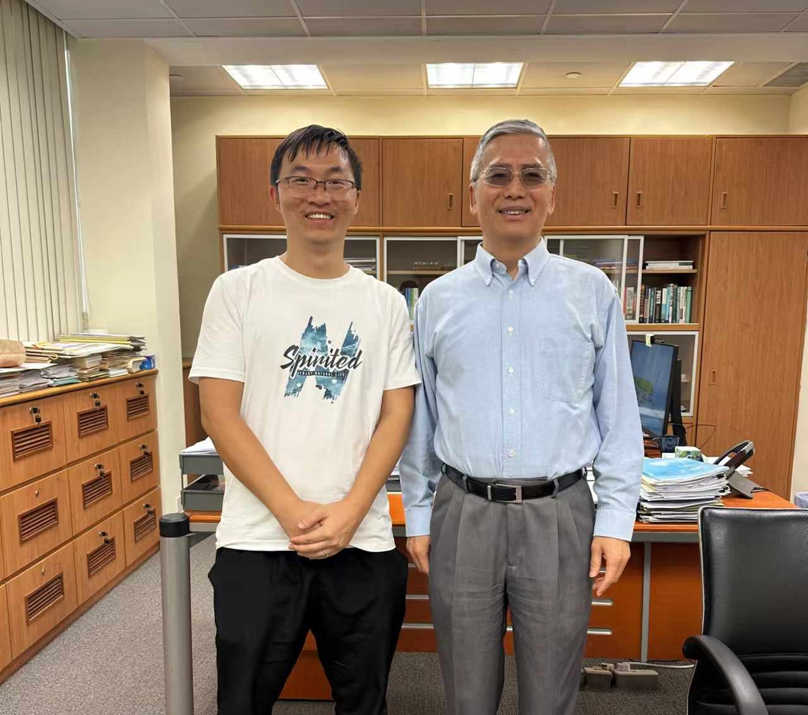
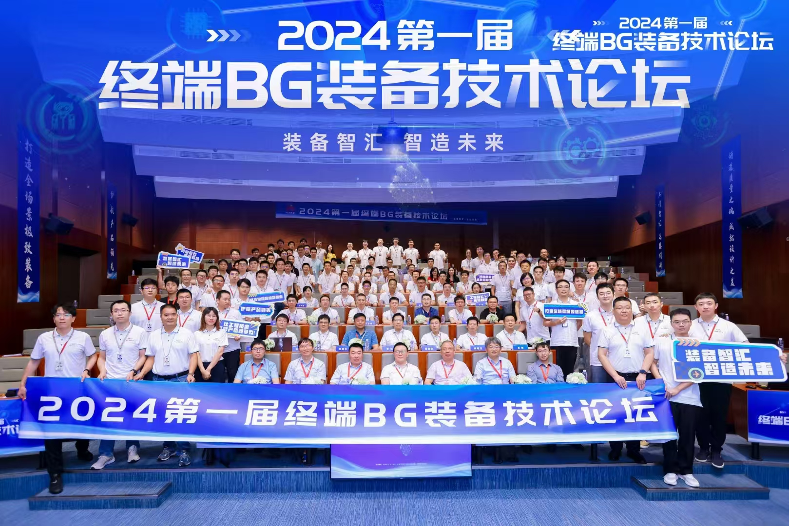
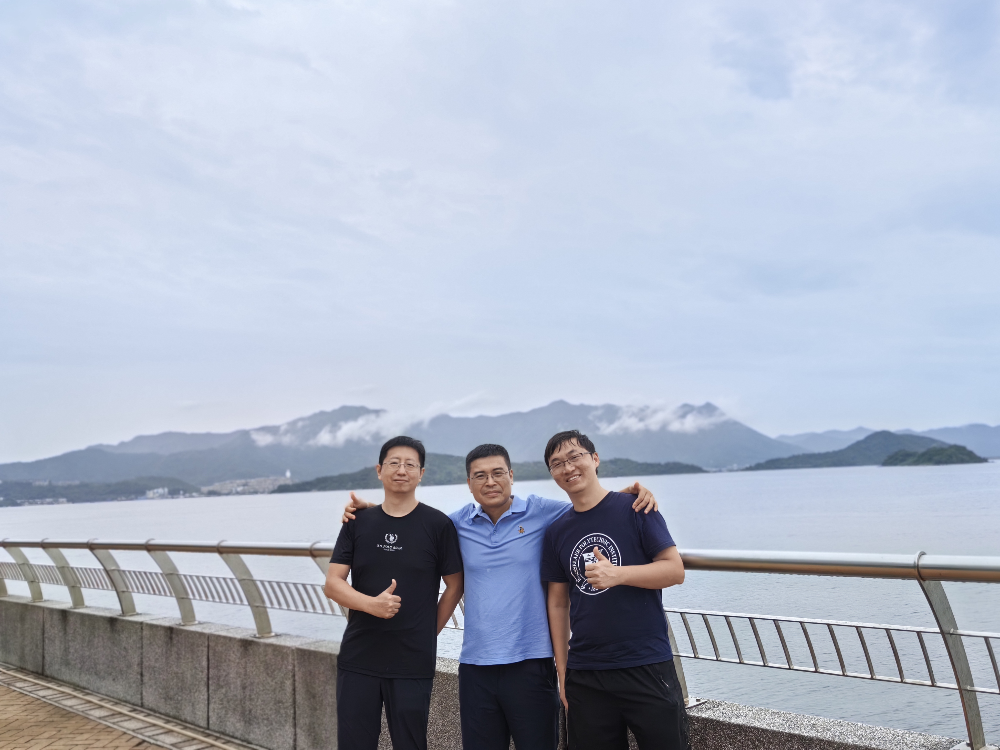
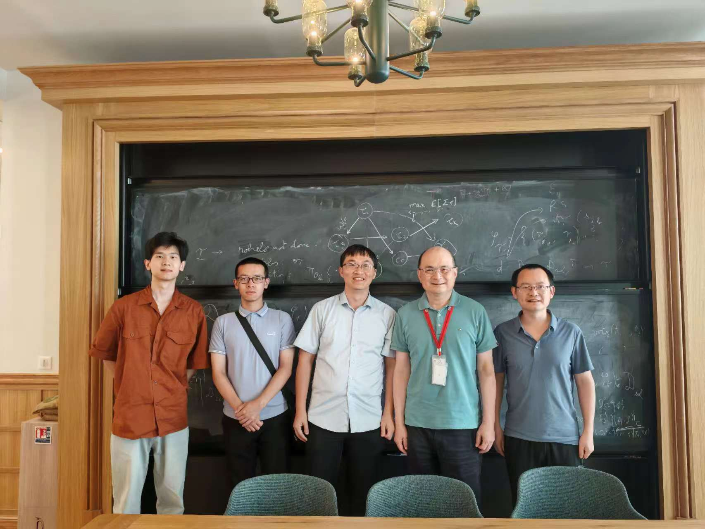
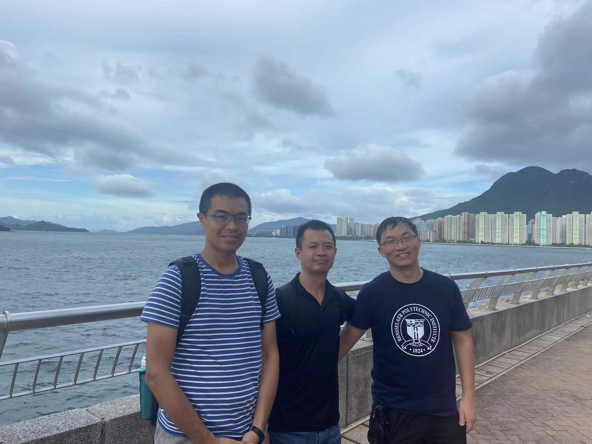
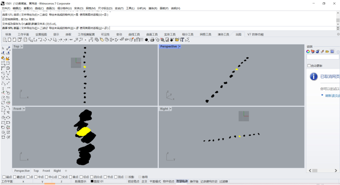
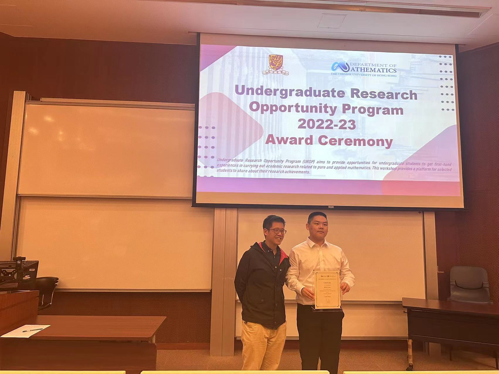

FAN=Frontier of Artificial Networks

Bio
I am a Research Assistant Professor (non-tenure-tracked faculty, a highly competitive position, can hire postdoc/RA/MPhil) in Department of Mathematics, The Chinese University of Hong Kong. Prior to this, I was a Postdoctoral Associate at Weill Cornell Medicine, Cornell University. I studied my PhD in a small but lovely university Rensselaer Polytechnic Institute (RPI), US, where I feel blessed to be advised by Dr. Ge Wang and have so many wonderful friends. Prior to RPI, I studied my undergraduate at Harbin Institute of Technology, China.
My research interest is in NeuroAI and its applications in data science. I usually built models by drawing inspiration from neuroscience and then established theory as well as empirical experiments for the developed neuro-inspired model. I am a frequent reviewer for AAAI, Artificial Intelligence Journal, IJCAI, IEEE TPAMI, IEEE TMI, IEEE TNNLS, IEEE TII. Besides my research, I am a big fan of math and physics. I am also operating a Blog over WeChat together with my friends. If you are interested in my research, please feel free to reach me out (hitfanfenglei@gmail.com).
- Phone: +852 84519576
- City: Hong Kong
- Degree: PhD
- Email: hitfanfenglei@gmail.com
News
-
Oct 8, 2024. Lunch with Dean Song. I learned a lot!

-
Sep 14, 2024. RPI Aluminae Lunch with Drs. Ke Yang, Qingpeng Zhang, and Zuankai Wang

-
Aug 24, 2024. I am happy to discuss with talents of *** in Songshan Lake, Dongguan!

-
Aug 21, 2024. My collaborator Dr. Jianjun Wang (Deputy Chief Engineer of Guangxi Road&Bridge Group) visited me!

-
July 25, 2024. Visit Drs. Rui and Deng in Paris!

-
July 15, 2024. My old friends Drs. Yen-jen Cheng (National Pingtung University) and Chia-An Liu (Soochow University) at Taiwan ROC visited me. It was so much fun to chat with them again on algebraic graph theory and
group representation theory!

-
July 1, 2024. Thank my mentee Jingbo Zhang! The concrete gradation project with Guangxi Road&Bridge Group was finished and obtained thump-up from experts in Guangxi. This is the first industrial project in my life!

-
Nov 1, 2023. My mentee Zelin Dong won the Gold Medal in Undergraduate Research Opportunities Program (UROP), Department of Mathematics, The Chinese University of Hong Kong (CUHK)

Education
- 2017.9--2021.7: PhD, Rensselaer Polytechnic Institute, School of Engineering, advised by Prof. Ge Wang, US.
- 2015.1--2015.6: Exchange student, National Chiao-Tung University, School of Instrumentation Science and Technology, Taiwan, China.
- 2013.9--2017.6: Bachelor, Harbin Institute of Technology, School of Instrumentation Science and Technology, China.
Research Experience
- 2022.12--present: Research Assistant Professor, Department of Mathematics, The Chinese University of Hong Kong, HK
- 2021.9--2022.8: Postdoctoral Associate, Prof. Fei Wang’s Lab, Department of Computer Science, Cornell University, New York, NY, US
- 2020.1--2020.8: Research Intern, Dr. Dimitry Krotov’s Group, MIT-IBM Watson AI Lab, Cambridge, MA, US
- 2019.5 – 2019.8: Summer Intern, GE Global Research Center, Niskayuna, NY, US
- 2016.9 – 2017.6: Research Associate, Prof. Jian Liu’s Lab, School of Precise Instrument, Harbin Institute of Technology, Harbin, Heilongjiang, China
- 2016.6 – 2016.8: Visiting Student, Prof. Jean Michel Nunzi’s Lab, Department of Physics, Queen’s University, Kingston, Ontario, Canada
- 2015.1 – 2015.6: Visiting Student, Prof. Chin-Wen Weng’s Group, Department of Applied Mathematics, National Chiao Tung University, Hsinchu, Taiwan, China
Honors and Awards
- July 18, 2024: Our paper was selected for the IEEE TRPMS Best Paper Award from the IEEE Nuclear and Plasma Society .
- May 26, 2024: Our paper was selected as one of few CVPR 2024 Best Paper Award candidates (24 out of 2W+ submissions).
- June 06, 2022: I was honored to be selected as the award recipient for the 2021 International Neural Network Society Doctoral Dissertation Award.
- April, 2019: I am awarded an IBM AI Scholarship. IBM will support my research by covering my tuition and living expenses until graduation.
- 2016:Congxin Scholarship, Harbin Institute of Technology (awarded to only two undergraduates annually).
- 2014: Fujixerox Scholarship, Harbin Institute of Technology.
Talks and Presentations
- Invited Talk at Department of Data Science, City University of Hong Kong, Hong Kong, Sep 30, 2024
- Invited Talk at Workshop "AI for Science", Department of Mathematics, Hong Kong University of Science and Technology, Hong Kong, Sep 19, 2024
- Invited Talk at Hong Kong Baptist University, Hong Kong, Sep 10, 2024
- Invited Talk at *** Department of Consumer Equipment Manufacturing Technology, Dongguan, August 24, 2024
- Invited Talk at ***, Paris, France, July 25, 2024
- Invited Talk at SMU, April 12, 2024
- Invited Talk at FAI, December 9, 2023
- Invited Talk at Sichuan University, November 14, 2023
- Invited talk at CCF-EDA, Beijing, Oct 14, 2023
- Invited talk at BICMR, Peking University, May 23, 2023
- Invited talk at HIT Institute of Advanced Study in Mathematics, April 25, 2023
- Invited talk at Fuzhou University, Apr 1, 2023
- Tutorials on “Introducing Neuronal Diversity into Deep Learning” at AAAI2023 (AAAI is a top conference in the field of AI. Only approximately 20 tutorials are accepted annually.)
- Invited talk at SUSTech, Jan 12, 2023
- Invited talk at Northeastern University, Jan 8, 2023
- Invited talk at Fudan University, Dec 4, 2022.
- Invited talk at HIT Institute of Advanced Study in Mathematics, November 24, 2022
- Invited talk at National Biomedical Imaging Center, Peking University, October 27, 2022.
- Invited talk at IFMI & ISPEMI 2022, hosted by Chinese Academy of Engineering, August 10, 2022
- Invited talk at Summer School of Xiamen University, July 15, 2022.
- Invited talk at School of Math, Harbin Institute of Technology, April 2022.
- Invited talk at SCF-YSSEC, State Key Laboratory of Scientific and Engineering Computing, China, November 2021 (http://scf.cc.ac.cn/yssec2021/).
- Invited talk at FDA, May 2021.
- Invited job talk at Weill Cornell Medicine, Cornell University, January 2021.
- Invited job talk at Department of Mathematics, Duke University, December 2020.
- Poster presentation at fully3D 2019, Philadelphia, PA, June 2019.
Representative Work
- Dong Z, Fan FL*, Liao W, Junchi Yan: Grounding and Enhancing Grid-based Models for Neural Fields, CVPR, 2024, in press (This paper gets full-graded review, CVPR 2024 Best Paper Award Candidate )
- Fan FL, Lai RJ, Wang G: Quasi-Equivalency of Width and Depth of Neural Networks. Journal of Machine Learning Research, 2023 in press (My PhD advisor Prof. Ge Wang listed this paper as one of his 16 representative papers among his 700+ publications )
- Zhang SQ, Wang F, and Fan FL*: Neural Network Gaussian Processes by Increasing Depth. IEEE Transactions on Neural Networks and Learning Systems, 2022 in press (IF=14.25).
- Fan FL, Cong W, and Wang G: A new type of neurons for machine learning. Int. J. for Number. Method. in Biomed. Eng., 34.2, e2920, 2018 (the first paper on introducing neuronal diversity into deep learning).
Funding
- PI, Concrete Segmentation and Gradation Analysis, Guangxi Road&Bridge Company of Guangxi Beibu Gulf Investment Group Co., Ltd. (China Top 500), 150,000 RMB, June 2023 – June 2024 (Finished).
- PI, Engineering of Great Mathematical Theorems, Research Contract, ****, 1,490,000 HKD, June 1, 2024 – June 1, 2026.
- PI, **** Gifted Fund, 990,000 HKD, Apr 1, 2024 – Apr 1, 2026.
Teaching
- MATH3320: Data Analytics
- MATH6251: Topics in Mathematical Data Science